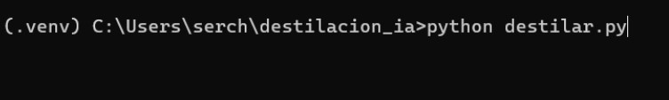
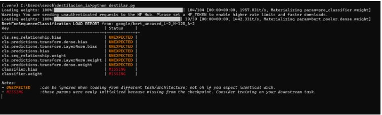
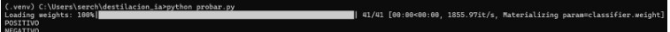
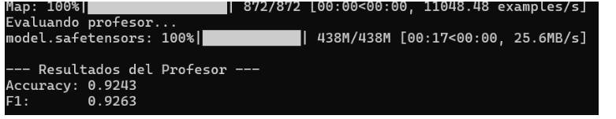

1
Acceso Carpeta Proyecto

f1des.jpg - Entrada al proyecto
Se navega a la carpeta destilacion_ia donde se encuentra todo el código de destilación.
C:\Users\serch>cd C:\Users\serch\destilacion_ia
C:\Users\serch\destilacion_ia>2
Activar Entorno Virtual

f2des.jpg - Entorno (.venv)
Se activa el entorno virtual para aislar las dependencias específicas del proyecto de destilación.
.venv\Scripts\activate.bat
(.venv) C:\Users\serch\destilacion_ia>3
🚀 Ejecutar Destilación

f3des.jpg - Proceso destilación
Se ejecuta destilar.py transfiriendo conocimiento del modelo profesor al estudiante.
python destilar.py
Loading weights: 100%4
📊 Reporte de Parámetros

f4des.jpg - Reducción 15.3x
Profesor
66.96M
Parámetros
Estudiante
4.39M
Parámetros
Reducción
15.3x
Menor tamaño
5
🔍 Prueba Básica

f5des.jpg - Predicciones básicas
POSITIVO
NEGATIVO
NEGATIVO
Se verifica funcionamiento básico del modelo estudiante destilado con probar.py.
6
📈 Evaluación Estudiante

f6des.jpg - Accuracy 82.22%
Accuracy: 0.8222 (82.22%)
F1-Score: 0.8229
[file:2]
F1-Score: 0.8229
7
👨🏫 Evaluación Profesor

f7des.jpg - Accuracy 92.43%
Accuracy: 0.9243 (92.43%)
F1-Score: 0.9263
[file:2]
F1-Score: 0.9263
8
🧠 Duelo de Acertijos

f8des.jpg - Profesor gana
Prueba final con acertijos_profesor_vs_estudiante.py confirma superioridad del profesor.
🎉 DESTILACIÓN EXITOSA
✅ Reducción 15.3x (66.96M → 4.39M parámetros)
✅ Estudiante mantiene 82% accuracy vs 92% profesor
✅ Profesor sigue siendo superior en tareas complejas
✅ KL Divergence: 0.51 (destilación efectiva)
📁 Estructura de archivos:
📁 destilacion_ia/
├── index.html (esta página)
└── 📁 imagenes/
├── f1des.jpg 🚪 Acceso proyecto
├── f2des.jpg 🐍 Entorno virtual
├── f3des.jpg ⚡ Destilación
├── f4des.jpg 📊 15.3x reducción
├── f5des.jpg 🧪 Prueba básica
├── f6des.jpg 📈 82% accuracy
├── f7des.jpg 👨🏫 92% profesor
└── f8des.jpg 🧠 Duelo IA